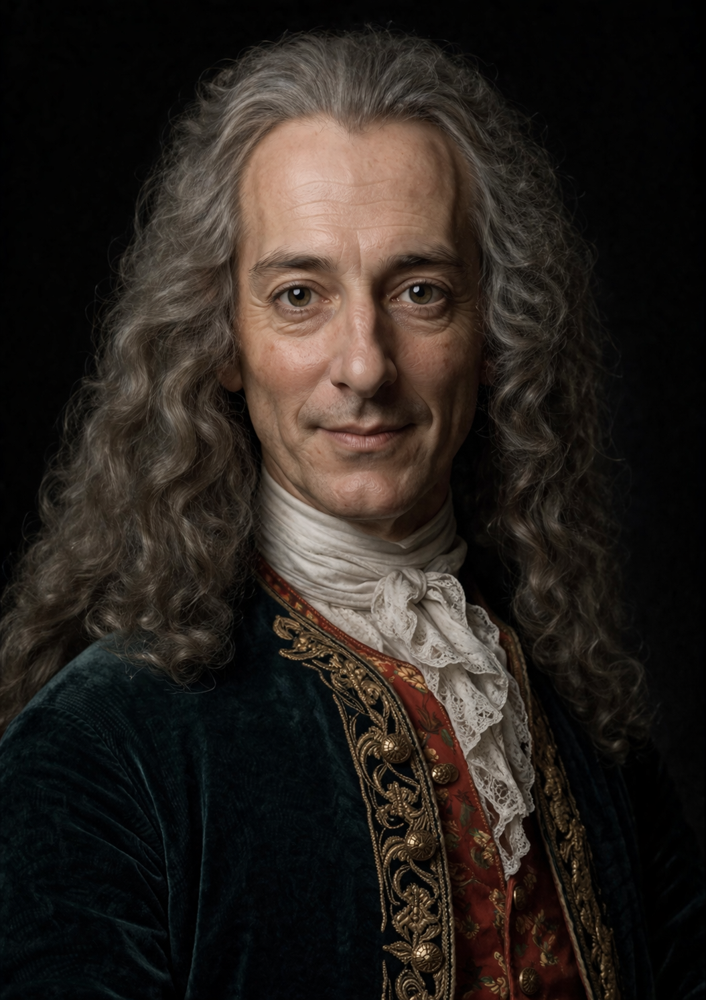

Shkrimtar • Filozof • Figurë e Iluminizmit
Voltaire, emri i vërtetë i të cilit ishte François-Marie Arouet, lindi në vitin 1694 në Paris. Ai u rrit në një mjedis të kulturuar ku arsimi dhe letërsia zinin një vend të rëndësishëm. Që në moshë të hershme, ai tregoi një talent të madh për shkrim dhe një prirje të veçantë për reflektim intelektual. Mendja e tij kurioze dhe kritike e çoi shpejt të vëzhgonte shoqërinë e kohës së tij me ironi dhe qartësi.
Voltaire u bë një nga mendimtarët më të famshëm të shekullit të Iluminizmit. Në shkrimet e tij, ai shpesh kritikonte intolerancën, padrejtësitë shoqërore dhe abuzimet me pushtetin. Stili i tij ishte i gjallë, ironik dhe ndonjëherë satirik, gjë që i solli si admirimin e shumë lexuesve, ashtu edhe armiqësinë e disa autoriteteve politike dhe fetare.
Për shkak të shkrimeve dhe ideve të tij, Voltaire pati disa konflikte me pushtetin. Ai madje u burgos në Bastijë përpara se të shkonte në mërgim në Angli. Kjo periudhë ishte shumë e rëndësishme për mendimin e tij. Ai zbuloi një shoqëri ku liria politike dhe fetare ishte më e zhvilluar, gjë që ndikoi thellë në idetë e tij mbi tolerancën dhe lirinë e mendimit.
Voltaire shkroi një gamë të gjerë veprash: letra, ese, drama, poezi dhe tregime filozofike. Një nga tekstet e tij më të famshme është Candide, botuar në vitin 1759. Nëpërmjet këtij rrëfimi plot humor dhe ironi, ai kritikon optimizmin naiv dhe tregon vështirësitë dhe padrejtësitë që ekzistojnë në botë.
Voltaire nuk u mjaftua vetëm me shkrim: ai u angazhua gjithashtu në disa çështje gjyqësore për të mbrojtur persona që ishin viktima të gabimeve ose të intolerancës fetare. Ai synonte të promovonte një drejtësi më njerëzore, më racionale dhe më respektuese ndaj të drejtave të individëve.
Sot, Voltaire konsiderohet si një nga figurat më të rëndësishme të Iluminizmit. Veprat dhe idetë e tij kanë ndikuar thellë në mendimin evropian. Ai mbetet një simbol i mendimit kritik, i lirisë intelektuale dhe i luftës kundër intolerancës.